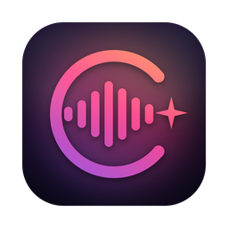
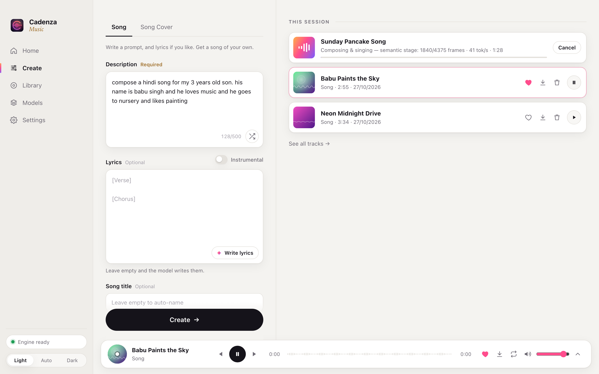
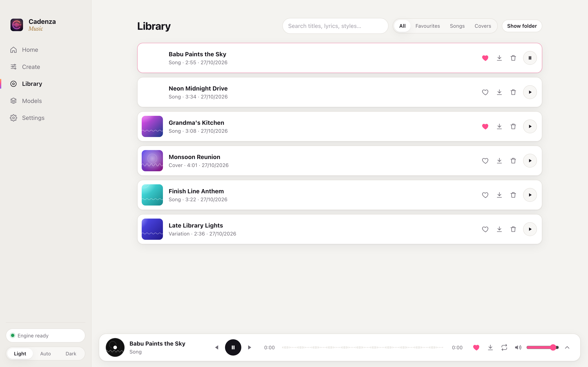
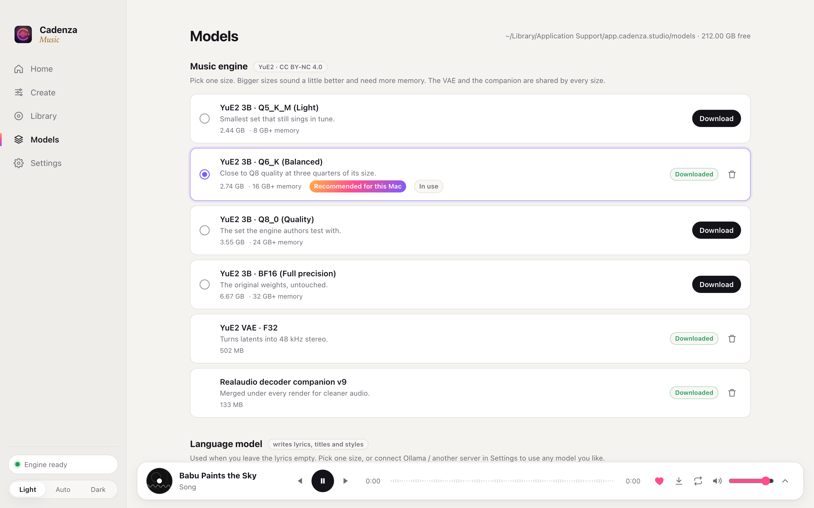
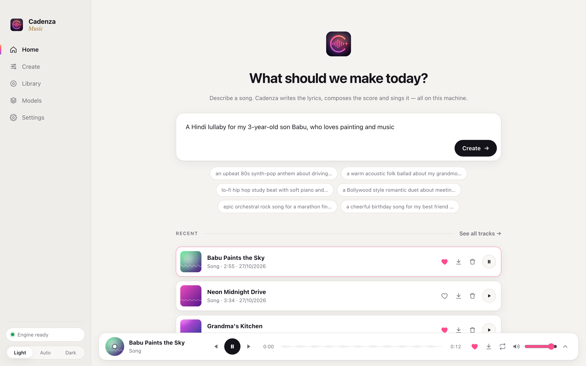
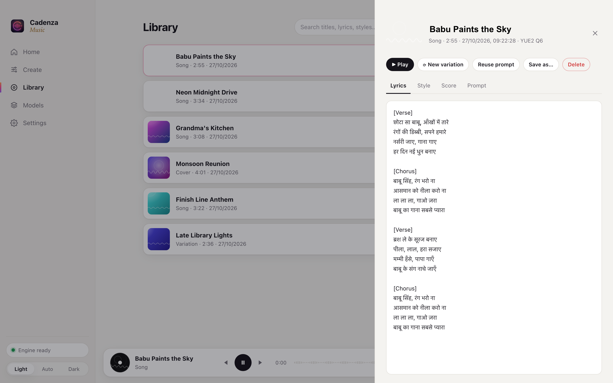

Prompt to full song.
Name, age, hobbies, a city, a feeling — put it in a sentence. A local language model writes singable lyrics with verses and a chorus, then YuE2 composes and performs them.

Cadenza
Describe a song in one sentence. Cadenza writes the lyrics, composes the melody and sings it — a full track with vocals, made entirely on your own computer.
macOS · Windows · Linux · No account. No subscription. No limits.

One sentence in
Lyrics, title, style, melody, chords, voice and mix — all from the line above.
Features
Name, age, hobbies, a city, a feeling — put it in a sentence. A local language model writes singable lyrics with verses and a chorus, then YuE2 composes and performs them.
English, Hindi, Chinese, Japanese, Korean, Spanish, Punjabi and more — written in their own script.
One click fills in the lyrics, title and style. Edit any word before you create.
Every song starts as sheet music with melody and chords. Read it alongside the lyrics.
Keep the composition and the singing, re-roll the sound. Seconds, not minutes.
Give it a recording. Cadenza hears the melody and sings it again in any style you describe.
Flip one switch for a track with no vocals — study beats, intros, background music.
Search by title, lyrics or style. Favourites, rename, Save As, and the full recipe of every track — prompt, lyrics, style, score and seeds.

Studio-rate stereo. Save any track wherever you like, at up to 320 kbps or 24-bit.
Length, score mode, quality steps, creativity and seeds — or ignore them all.
Follows your system, or pick one. Feels at home on every desktop.
How it works
Open Models and pick sizes that suit your computer. Cadenza checks your memory and recommends the right ones — the whole set is about 9 GB, verified and resumable.

Type what you want to hear and press Create. Paste your own lyrics, or let the model write them. Set the length, language and number of variations under Advanced.

The song lands in your session and starts playing. Open it to read the lyrics and score, make a variation, or save it as MP3 or WAV.

Under the hood
A local LLM turns your sentence into lyrics, a title and a production brief.
YuE2 writes a score: melody and chords in ABC notation.
It performs the score as audio codes, then flow matching paints the sound.
A neural decoder renders 48 kHz stereo, normalised and ready to play.
Models
Every model comes in several sizes. A 16 GB laptop runs the light ones. A workstation can run full precision — or any model you like through Ollama.
Cadenza runs entirely on your computer. Your prompts, lyrics and music never leave it. No account, no tracking, no usage limits, no monthly bill. It even works offline once the models are downloaded.
Free and open source.
Yes. Cadenza is open source and everything runs on your own computer, so there's nothing to pay for and no limit on how many songs you make.
It depends on your hardware and the song length. On an Apple M1 Pro, expect a few minutes for a three-minute song. Variations of a song you've already made are much faster.
A Mac with Apple silicon, or a Windows or Linux PC with a recent GPU and at least 16 GB of memory. About 10 GB of free disk space for the models.
No, not with the default model. The YuE2 weights are licensed CC BY-NC 4.0, which means non-commercial use only. Personal songs, gifts, family videos and experiments are all fine.
Yes. Pick a larger Gemma size in Models, or switch to Ollama or any OpenAI-compatible server in Settings and use any model you like, up to 70B on a big machine.
The app isn't notarised yet. Move it to Applications and run xattr -cr /Applications/Cadenza.app once in Terminal, then open it.